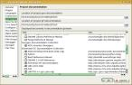
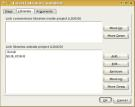
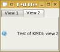
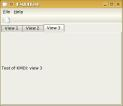
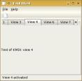
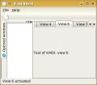
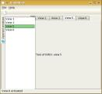
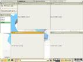
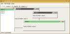
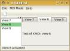

KMDI is a new KDE library, which is available only from KDE 3.2. It allows you to create in an easy way complex MDI layout, like the one you can see in KDevelop. It's really simple to use, but no one had written a tutorial when I needed. So, I wrote this one. Hope you'll like it.
Open KDevelop. Click on the menu, and then on the option. Select , and then . Follow the wizard, and you will end up with a simple but working KDE application. I'll assume you called it KMDITest.
Ok, now let's make ourselves a bit easier the life. First: open the KDevelop configuration dialog and set it up as you like. To open it, go on the menu and select .
Next thing to do: set up the project. Open the menu, and select item. On the tab, disable everything you don't need for this project, like the Gnome things. This will make life a lot easier when you need the help.
An image of how I've set up things in the documentation tab of the project options.
Ok, now let's enable one of the nicer things of KDevelop: the code completion. Open the tab, and then the sub-tab. Click on the button labeled , follow the wizard and add the QT repository and the KDE one. It's trivial to follow them, and after you've done it you will really love KDevelop a lot more :-D.
Play with things in the other tab for a while, if you wants, then accept your changes, and if asked to run the Automake & friends, say no. We have to do one things before this: we need to add the library KMdi to our program. Look at the left part of the KDevelop's main window (if you use the default layout). You should see two buttons: one is for the , and the other is for the . Click on it, and on the bottom part right - click on the kmditest item, which should be in bold, and select the menu item. This will bring up a dialog. Click on the tab, and then on the button on the bottom, near the list of libraries outside the project. Add the library -lkmdi.
The target libraries after adding the KMDI library.
Ok, now it's time to build the project. Go on the menu, and select the item . When you're done, go again on the menu, and select the item . After that, you're ready to build your project and test it. The default key-binding for this is F8. Of course, there's a menu item in the . It should build without errors. If all goes fine, let's try our program, by pressing CTRL+F9 (in the default configuration).
An image of the application started.
As you've probably noticed, the previous part didn't do anything on the KMDI side, but linking our program with the library. Now, we'll start to use this nice library.
Open the file which contains the declaration of your class, which in my example is kmditest.h. Replace the line
#include <kmainwindow.h>with the following:
#include <kmdimainfrm.h>Of course, also the base class of KMDITest should be replaced, from KMainWindow, into KMdiMainFrm. In the kmditest.cpp file, change the call to the base constructor from this:
KMDITest::KMDITest()
: KMainWindow( 0, "KMDITest" )
to this:
KMDITest::KMDITest() : KMdiMainFrm( 0, "KMDITest_MainWindow", KMdi::IDEAlMode )Done: your application uses KMDI. Now, let's add something nice to the main window.
Remove all the code from ther KMDITest constructor except the setXMLFile call, and replace it with this:
setXMLFile("kmditestui.rc");
// Add a sample child view
KMdiChildView *view1 = new KMdiChildView( i18n( "View 1" ), this );
( new QHBoxLayout( view1 ) )->setAutoAdd( true );
( new QLabel( view1 ) )->setPixmap( BarIcon( "konsole" ) );
new QLabel( i18n( "Test of KMDI: view 1" ), view1 );
addWindow( view1 );
// Add another sample child view
KMdiChildView *view2 = new KMdiChildView( i18n( "View 2" ), this );
( new QHBoxLayout( view2 ) )->setAutoAdd( true );
( new QLabel( view2 ) )->setPixmap( BarIcon( "quanta" ) );
new QLabel( i18n( "Test of KMDI: view 2" ), view2 );
addWindow( view2 );
Of course, be sure that you have the following file included:
#include <qlabel.h> #include <kmdichildview.h> #include <klocale.h> #include <qlayout.h> #include <kiconloader.h>Now give a try to the program. This is my version of the kmditest.h and kmditest.cpp files, if you need them.
An image of the application with KMDI enabled.
Ok, now let's add something to our program. In the constructor of the class KMDITest, remove all the code and replace it with this:
setXMLFile("kmditestui.rc");
KStdAction::openNew( this, SLOT( openNewWindow() ), actionCollection() );
KStdAction::quit( kapp, SLOT( quit() ), actionCollection() );
createGUI( 0 );
So simple right? Now, let's implement the slot openNewWindow. Declare it into the header file, and write this code as implementation:
void KMDITest::openNewWindow()
{
// Add a child view
m_childs ++;
KMdiChildView *view = new KMdiChildView( i18n( "View %1" ).arg( m_childs ), this );
( new QHBoxLayout( view ) )->setAutoAdd( true );
new QLabel( i18n( "Test of KMDI: view %1" ).arg( m_childs ), view );
addWindow( view );
}
As you see, every time you click on the button, you'll add a child to your view. To make the whole thing build, add a declaration of m_childs as an unsigned to the header, and intialize it to zero in the constructor, and update the include list. Here you can find the code: kmditest.h and kmditest.cpp

An image of the application with some childs opened.
In the previous paragraph, we added a button which allowed the user to add new windows. Now, it's time to see how to close windows. We will also learn how to manage the selection of a child widget. Let's start!
At first we will show the caption of the selected view in the status bar. To do so, add these two lines in the constructor code:
// When we change view, change the status bar text
connect( this, SIGNAL( viewActivated( KMdiChildView * ) ),
this, SLOT( currentChanged( KMdiChildView * ) ) );
// Create the status bar
statusBar()->message( i18n( "No view!" ) );
Of course, declare the slot currentChanged into the header and add this implementation:
void KMDITest::currentChanged( KMdiChildView *current )
{
// We can access the current window via current, or via the protected
// member we inerithed m_pCurrentWindow
statusBar()->message( i18n( "%1 activated" ).arg( current->tabCaption() ) );
}
This will show on the status bar the current view's caption.
Now, let's allow the user to close a view. Add this line in the constructor between the KStdAction::openNew and KStdAction::quit calls:
KStdAction::close( this, SLOT( closeCurrent() ), actionCollection() );As always, declare the slot, and write this code for it:
void KMDITest::closeCurrent()
{
// If there's a current view, close it
if ( m_pCurrentWindow != 0 ) {
// Notify the removeal of the window into the status bar
statusBar()->message(
i18n( "%1 removed" ).arg( m_pCurrentWindow->tabCaption() ) );
// We could also call removeWindowFromMdi, but it doesn't delete the
// pointer. This way, we're sure that the view will get deleted.
closeWindow( m_pCurrentWindow );
}
}
There is a bug: when you have created only one window, the m_pCurrentWindow is set to zero. But this is a bug in the KMDI library.
Here there are the up-to-date version of the sources: kmditest.h and kmditest.cpp
An image of the application with some childs opened and some closed.
In this part we'll learn how to add a tool window. These are widgets that embed themselves on the left, right, top or bottom of your window, and place a button to show / hide them. As an example, we'll add a tool window with the list of our windows.
At first, we need some way to store the windows. So add, at the bottom of the header file, a private variable of type QValueList< KMdiChildView * >, and call it, for example, m_window. Then modify the slot openNewWindow to this:
void KMDITest::openNewWindow()
{
// Add a child view
m_childs ++;
KMdiChildView *view = new KMdiChildView(
i18n( "View %1" ).arg( m_childs ), this );
( new QHBoxLayout( view ) )->setAutoAdd( true );
new QLabel( i18n( "Test of KMDI: view %1" ).arg( m_childs ), view );
// Add the item to the window list
m_window.append( view );
// Add to the MDI and set as current
addWindow( view );
currentChanged( view );
}
Then modify the slot closeCurrent to this:
void KMDITest::closeCurrent()
{
// If there's a current view, close it
if ( m_pCurrentWindow != 0 ) {
// Notify the removeal of the window into the status bar
statusBar()->message(
i18n( "%1 removed" ).arg( m_pCurrentWindow->tabCaption() ) );
// Remove from the window list
m_window.remove( m_window.find( m_pCurrentWindow ) );
// We could also call removeWindowFromMdi, but it doesn't delete the
// pointer. This way, we're sure that the view will get deleted.
closeWindow( m_pCurrentWindow );
}
}
This way we will keep an up-to-date list of window opened in m_window. Arrange the include list and be sure that the code builds.
Now let's add the tool window. This will be a panel, placed on the left, with a KListBox. Of course, this list box will be synchronized with the m_window content.
Simply add these lines at the bottom of the constructor of KMDITest:
// Create the list of the opened windows
m_listBox = new KListBox( this );
m_listBox->setCaption( i18n( "Opened windows" ) );
addToolWindow( m_listBox, KDockWidget::DockLeft, getMainDockWidget() );
Of course, declare m_listBox as a protected KListBox in the header file. Here are the sources: kmditest.h and kmditest.cpp

An image of the application with the tool box opened.
Ok, now it's time to show something useful in the list box, like the window list. To do this, we'll modify again the slot openNewWindow. This is the new version:
void KMDITest::openNewWindow()
{
// Add a child view
m_childs ++;
KMdiChildView *view = new KMdiChildView(
i18n( "View %1" ).arg( m_childs ), this );
( new QHBoxLayout( view ) )->setAutoAdd( true );
new QLabel( i18n( "Test of KMDI: view %1" ).arg( m_childs ), view );
// Add the item to the window list
m_window.append( view );
m_listBox->insertItem( view->tabCaption() );
// Add to the MDI and set as current
addWindow( view );
currentChanged( view );
}
We need to modify the closeCurrent slot too. Replace its code with this:
void KMDITest::closeCurrent()
{
// If there's a current view, close it
if ( m_pCurrentWindow != 0 ) {
// Notify the removeal of the window into the status bar
statusBar()->message(
i18n( "%1 removed" ).arg( m_pCurrentWindow->tabCaption() ) );
// Remove from the window list
m_window.remove( m_window.find( m_pCurrentWindow ) );
// Remove from the list box
QListBoxItem *item = m_listBox->findItem( m_pCurrentWindow->tabCaption() );
assert( item );
delete item;
// We could also call removeWindowFromMdi, but it doesn't delete the
// pointer. This way, we're sure that the view will get deleted.
closeWindow( m_pCurrentWindow );
}
// Synchronize combo box
if ( m_pCurrentWindow ) {
currentChanged( m_pCurrentWindow );
}
}
Ok, now we have to synchronize the current tab with the list box. So, replace currentChanged's code with this:
void KMDITest::currentChanged( KMdiChildView *current )
{
// Update status bar and list box
statusBar()->message( i18n( "%1 activated" ).arg( current->tabCaption() ) );
QListBoxItem *item = m_listBox->findItem( current->tabCaption() );
assert( item );
m_listBox->setCurrentItem( item );
}
This way when the user changes current tab, we will get the list box updated. And now we need to change the current tab when the user selects an item of the list box. So add this line at the bottom of the constructor:
connect( m_listBox, SIGNAL( executed( QListBoxItem * ) ), this,
SLOT( listBoxExecuted( QListBoxItem * ) ) );
Declare the slot listBoxExecuted in the header file, and write this code as the following:
void KMDITest::listBoxExecuted( QListBoxItem *item )
{
// Get the current item's text
QString text = item->text();
// Active the corresponding tab
for ( QValueList< KMdiChildView *>::iterator it = m_window.begin();
it != m_window.end(); ++it ) {
// Get the view
KMdiChildView *view = *it;
assert( view );
// Is the view we need to show?
if ( view->caption() == text ) {
view->activate();
break;
}
}
}
Arrange things to make the program build, and play a bit with it. Don't you think it's really nice? :-D Here are the sources: kmditest.h and kmditest.cpp

An image of the application with the tool box working.
So far, we only allowed the user to have the MDI mode called IDEAl. Let's allow him/her to choose every kind of layout he/she likes.
In the constructor, just before the call to createGUI, add these lines:
// Allow the user to change the MDI mode
KToggleAction *tl = new KRadioAction( i18n( "Top level mode" ), KShortcut(),
this, SLOT( switchToToplevelMode() ), actionCollection(), "toplevel" );
tl->setExclusiveGroup( "MDIMode" );
KToggleAction *cf = new KRadioAction( i18n( "Child frame mode" ), KShortcut(),
this, SLOT( switchToChildframeMode() ), actionCollection(), "childframe" );
cf->setExclusiveGroup( "MDIMode" );
KToggleAction *tp = new KRadioAction( i18n( "Tab page mode" ), KShortcut(),
this, SLOT( switchToTabPageMode() ), actionCollection(), "tabpage" );
tp->setExclusiveGroup( "MDIMode" );
KToggleAction *id = new KRadioAction( i18n( "IDEAl mode" ), KShortcut(),
this, SLOT( switchToIDEAlMode() ), actionCollection(), "ideal" );
id->setExclusiveGroup( "MDIMode" );
id->setChecked( true );
Replace the kmditestui.rc file with the following:
<!DOCTYPE kpartgui SYSTEM "kpartgui.dtd">
<kpartgui name="kmditest" version="1">
<MenuBar>
<Menu name="MDIMode"><text>MDI Mode</text>
<Action name="toplevel" />
<Action name="childframe" />
<Action name="tabpage" />
<Action name="ideal" />
</Menu>
</MenuBar>
</kpartgui>
If you haven't yet done it, install your application, and play a bit with it. As you can see, we've got some problems to solve.
You can see that when you switch to child mode you have some buttons to close the child windows. We'll need to handle this, and to remove the child view from the window list. So let's add this to the end of openNewWindow:
// Handle the request of killing
connect( view, SIGNAL( childWindowCloseRequest( KMdiChildView * ) ),
this, SLOT( childClosed( KMdiChildView * ) ) );
This way, we get the slot childClosed called every time a child gets closed. This is the slot's source:
void KMDITest::childClosed( KMdiChildView * w )
{
assert( w );
// Set as active
w->activate();
assert( w == m_pCurrentWindow );
// Notify the removeal of the window into the status bar
statusBar()->message(
i18n( "%1 removed" ).arg( w->tabCaption() ) );
// Remove from the window list
m_window.remove( m_window.find( w ) );
// Remove from the list box
QListBoxItem *item = m_listBox->findItem( w->tabCaption() );
assert( item );
delete item;
// Remove the view from MDI, BUT NOT DELETE IT! It gets automatically
// deleted by QT, since it was closed.
removeWindowFromMdi( w );
}
As you can see, childs get nicely removed from the list box.
Try to create at least one child window, and then switch to Top Level mode. Then, create a new child window. Notice that the new label gets embedded into the main frame. What a bad thing... Let's fix it! Replace the openNewWindow's code with this:
void KMDITest::openNewWindow()
{
// Add a child view
m_childs ++;
// The child view will be our child only if we aren't in Toplevel mode
KMdiChildView *view = new KMdiChildView(
i18n( "View %1" ).arg( m_childs ),
( mdiMode() == KMdi::ToplevelMode ) ? 0 : this );
( new QHBoxLayout( view ) )->setAutoAdd( true );
new QLabel( i18n( "Test of KMDI: view %1" ).arg( m_childs ), view );
// Add the item to the window list
m_window.append( view );
m_listBox->insertItem( view->tabCaption() );
// Add to the MDI and set as current
if ( mdiMode() == KMdi::ToplevelMode ) {
addWindow( view, KMdi::Detach );
} else {
addWindow( view );
}
currentChanged( view );
// Handle the request of killing
connect( view, SIGNAL( childWindowCloseRequest( KMdiChildView * ) ),
this, SLOT( childClosed( KMdiChildView * ) ) );
}
We simply create the view with us as parent if we aren't in Toplevel mode, and as a top level widget (parent == 0) if we are in the Toplevel mode. Also, we add the window with the Detach flag if we are in Toplevel mode. Quite easy, I think.
Here's the up-to-date version of the sources: kmditest.h and kmditest.cpp
An image of the application in top-level mode.
An image of the application in child frame mode.
An image of the application in tab page mode.
This is really simple. First, get the current mode saved. We will override the virtual function KMainWindow::queryClose. Let's write this code:
bool KMDITest::queryClose()
{
// Save current MDI mode
KConfig *c = kapp->config();
// Put in value a matching string value
QString value;
switch ( mdiMode() ) {
case KMdi::ToplevelMode:
value = "toplevel";
break;
case KMdi::ChildframeMode:
value = "childframe";
break;
case KMdi::TabPageMode:
value = "tabpage";
break;
case KMdi::IDEAlMode:
value = "ideal";
break;
case KMdi::UndefinedMode:
value = "ideal";
break;
}
// Write it!
c->writeEntry( "MDIMode", value );
c->sync();
// Allow to close the window
return true;
}
Then we need to restore the mode. I think that putting it into the main function simplifies things, so let's replace your main with this:
int main(int argc, char **argv)
{
// Default start-up routine
KAboutData about("kmditest", I18N_NOOP("KMDITest"), version, description,
KAboutData::License_GPL, "(C) 2004 Andrea Bergia", 0, 0, "andreabergia2@yahoo.it");
about.addAuthor( "Andrea Bergia", 0, "andreabergia2@yahoo.it" );
KCmdLineArgs::init(argc, argv, &about);
KApplication app;
// Read MDI mode
KConfig *c = app.config();
QString strMode = c->readEntry( "MDIMode", "ideal" );
KMdi::MdiMode mode = KMdi::IDEAlMode;
if ( strMode == "toplevel" ) {
mode = KMdi::ToplevelMode;
} else if ( strMode == "childframe" ) {
mode = KMdi::ChildframeMode;
} else if ( strMode == "tabpage" ) {
mode = KMdi::TabPageMode;
}
// Create main window
KMDITest *mainWin = new KMDITest( mode );
app.setMainWidget( mainWin );
mainWin->show();
// mainWin has WDestructiveClose flag by default, so it will delete itself.
return app.exec();
}
We need to change something in the constructor too. This is the final version:
KMDITest::KMDITest( KMdi::MdiMode mode )
: KMdiMainFrm( 0, "KMDITest", mode ), m_childs( 0 )
{
setXMLFile("kmditestui.rc");
// Create some actions
KStdAction::openNew( this, SLOT( openNewWindow() ), actionCollection() );
KStdAction::close( this, SLOT( closeCurrent() ), actionCollection() );
KStdAction::quit( this, SLOT( close() ), actionCollection() );
// Allow the user to change the MDI mode
KToggleAction *tl = new KRadioAction( i18n( "Top level mode" ), KShortcut(),
this, SLOT( switchToToplevelMode() ), actionCollection(), "toplevel" );
tl->setExclusiveGroup( "MDIMode" );
tl->setChecked( mode == KMdi::ToplevelMode );
KToggleAction *cf = new KRadioAction( i18n( "Child frame mode" ), KShortcut(),
this, SLOT( switchToChildframeMode() ), actionCollection(), "childframe" );
cf->setExclusiveGroup( "MDIMode" );
cf->setChecked( mode == KMdi::ChildframeMode );
KToggleAction *tp = new KRadioAction( i18n( "Tab page mode" ), KShortcut(),
this, SLOT( switchToTabPageMode() ), actionCollection(), "tabpage" );
tp->setExclusiveGroup( "MDIMode" );
tp->setChecked( mode == KMdi::TabPageMode );
KToggleAction *id = new KRadioAction( i18n( "IDEAl mode" ), KShortcut(),
this, SLOT( switchToIDEAlMode() ), actionCollection(), "ideal" );
id->setExclusiveGroup( "MDIMode" );
id->setChecked( mode == KMdi::IDEAlMode );
createGUI( 0 );
// When we change view, change the status bar text
connect( this, SIGNAL( viewActivated( KMdiChildView * ) ),
this, SLOT( currentChanged( KMdiChildView * ) ) );
// Create the status bar
statusBar()->message( i18n( "No view!" ) );
// Create the list of the opened windows
m_listBox = new KListBox( this );
m_listBox->setCaption( i18n( "Opened windows" ) );
addToolWindow( m_listBox, KDockWidget::DockLeft, getMainDockWidget() );
connect( m_listBox, SIGNAL( executed( QListBoxItem * ) ), this,
SLOT( listBoxExecuted( QListBoxItem * ) ) );
}
As you can see, I changed the receiver of the action quit to the slot close of the main window. Otherwise, we would never get queryClose called, if it was connected to KApplication::quit. The sources are here: main.cpp, kmditest.h and kmditest.cpp
Try this: when the program start, before creating child views, switch to Toplevel mode and then to IDEAl. The program crashes. Why? I think this is a bug in KMDI. In fact, if you see, KDevelop doesn't allows you to switch from and to IDEAl without a restart. But this is a test program, so we can live with this problem. If you want, write some slots which check the mode you came from and the mode you're going to, and allow the change only if it doesn't come from / go to IDEAl.
Now, let's suppose you want to add another tool view to your main window. To do this, you'll probably simple write something like that in the constructor:
// Create the list of the opened windows
m_listBox = new KListBox( this );
m_listBox->setCaption( i18n( "Opened windows" ) );
addToolWindow( m_listBox, KDockWidget::DockLeft, getMainDockWidget() );
// Create another tool box
QLabel *label = new QLabel( i18n( "Yet to implement, sorry!" ), this );
label->setCaption( i18n( "Help" ) );
addToolWindow( label, KDockWidget::DockLeft, getMainDockWidget() );
But this won't work! If you're asking why, I had a hard time finding it out. It's a simple problem, anyway. Replace the lines above with the following:
// Create the list of the opened windows
m_listBox = new KListBox( this, "opened_windows" );
m_listBox->setCaption( i18n( "Opened windows" ) );
addToolWindow( m_listBox, KDockWidget::DockLeft, getMainDockWidget() );
// Create another tool box
QLabel *label = new QLabel( i18n( "Yet to implement, sorry!" ), this, "help" );
label->setCaption( i18n( "Help" ) );
addToolWindow( label, KDockWidget::DockLeft, getMainDockWidget() );
We added a name (the last parameter to the constructor) to the widget. Of course, all the names have to be different. Really simple, right?
Well, I think we're almost finished. I can't think of any other things you'll need to know before programming with KMdi. So, happy coding, and hope to see your application soon :-D
Anyway, if you have any comment, question, suggestion or whatever, feel free to contact me. My email address is andreabergia2 yahoo.it.
As Hiroshi Sasago signaled to me, my code contains an error. Sometimes you can get a Segmentation fault when you close the main window. Rewrite the destructor as this to fix the error:
KMDITest::~KMDITest()
{
while( m_pCurrentWindow ) {
closeCurrent();
}
}
Thanks to Hiroshi!!